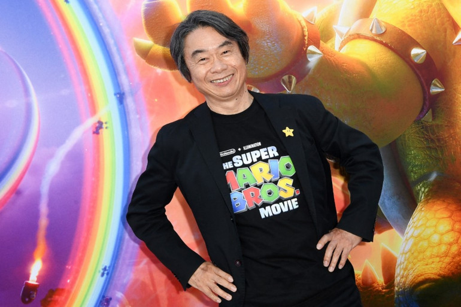

Why Was Zelda Made?
*The Legend of Zelda* was created by Shigeru Miyamoto and Takashi Tezuka at Nintendo. The game was inspired by Miyamoto’s childhood adventures exploring forests, caves, and lakes near his home in Japan.

Discover the origin of one of gaming's greatest legends.
*The Legend of Zelda* was created by Shigeru Miyamoto and Takashi Tezuka at Nintendo. The game was inspired by Miyamoto’s childhood adventures exploring forests, caves, and lakes near his home in Japan.
The game was developed by legendary game designer Shigeru Miyamoto, along with Takashi Tezuka, and released by Nintendo in 1986. Miyamoto wanted to create a game that allowed players to explore vast worlds full of secrets.
*The Legend of Zelda* was developed at Nintendo’s headquarters in Kyoto, Japan. It was designed for the Nintendo Entertainment System (NES), combining adventure, action, and puzzle-solving.
The primary goal in *The Legend of Zelda* is to rescue Princess Zelda and defeat the evil Ganon. Players control Link, the hero, as he embarks on an epic adventure to recover the pieces of the Triforce and save the kingdom of Hyrule.